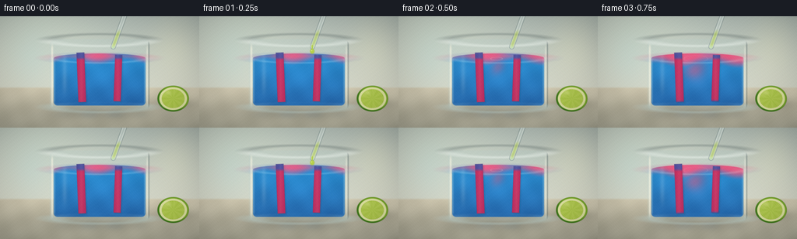
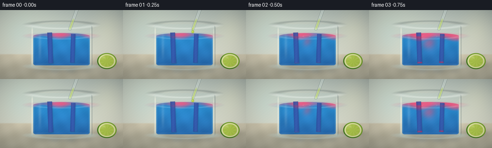
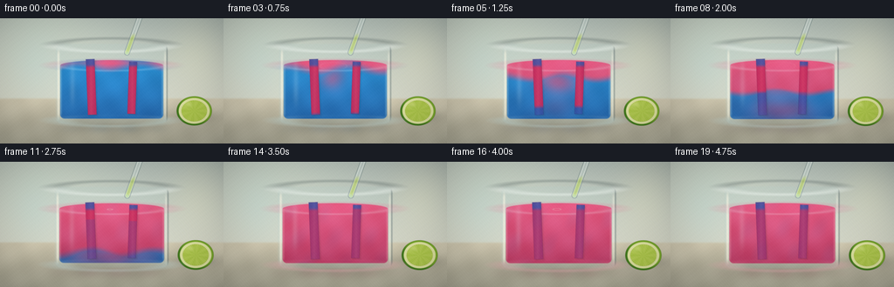
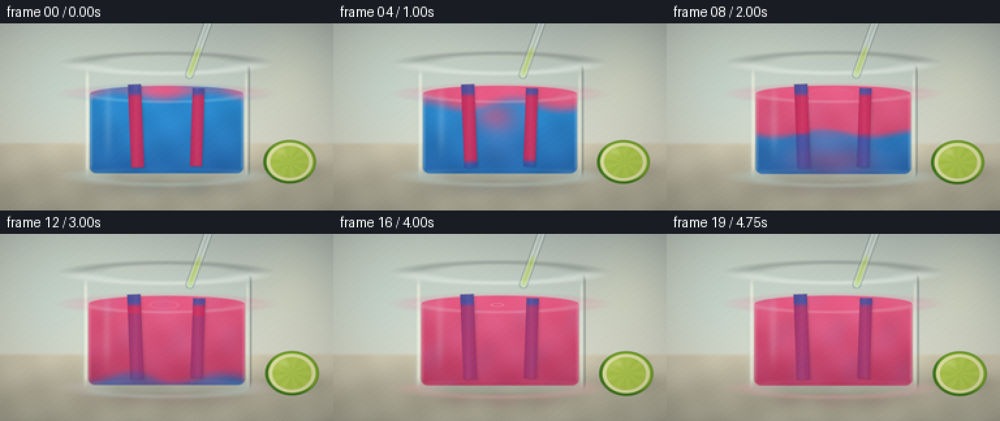
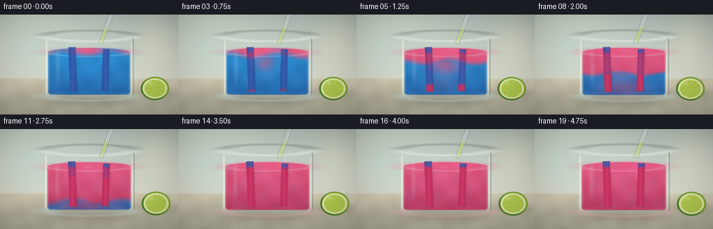
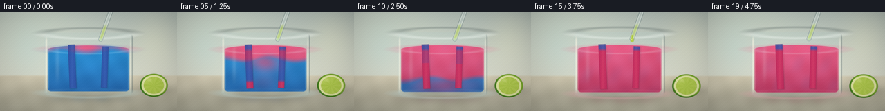

CODING AGENTS AS PIXEL WORLD MODELS
traex/DeepSeek-V4.1-Flash · material_0035
点击播放 · 原生 RGB 像素
逐轮保存的候选
回放视频、检查图与代码变化。
每份候选均可单独播放。实际图片检查记录在下方工具轨迹中。
候选 01播放与检查图
点击播放 · 原生 RGB 像素


展开代码变化
--- 上一保存版本
+++ 本次保存版本
@@ -0,0 +1,412 @@
+from pathlib import Path
+
+import numpy as np
+from PIL import Image, ImageFilter
+
+import artifact_io
+
+
+WIDTH = 256
+HEIGHT = 144
+FRAMES = 20
+FPS = 4.0
+SS = 4
+
+
+def smoothstep(edge0, edge1, x):
+ t = np.clip((x - edge0) / (edge1 - edge0), 0.0, 1.0)
+ return t * t * (3.0 - 2.0 * t)
+
+
+def ease(x):
+ x = np.clip(x, 0.0, 1.0)
+ return x * x * (3.0 - 2.0 * x)
+
+
+def sdf_rounded_box(x, y, left, top, right, bottom, radius):
+ cx = (left + right) * 0.5
+ cy = (top + bottom) * 0.5
+ hx = (right - left) * 0.5 - radius
+ hy = (bottom - top) * 0.5 - radius
+ qx = np.abs(x - cx) - hx
+ qy = np.abs(y - cy) - hy
+ outside = np.sqrt(np.maximum(qx, 0.0) ** 2 + np.maximum(qy, 0.0) ** 2)
+ inside = np.minimum(np.maximum(qx, qy), 0.0)
+ return outside + inside - radius
+
+
+def mask_from_sdf(sdf, feather=0.55):
+ return np.clip(0.5 - sdf / (2.0 * feather), 0.0, 1.0)
+
+
+def ellipse_sdf(x, y, cx, cy, rx, ry):
+ return np.sqrt(((x - cx) / rx) ** 2 + ((y - cy) / ry) ** 2) - 1.0
+
+
+def segment_distance(x, y, ax, ay, bx, by):
+ vx, vy = bx - ax, by - ay
+ wx, wy = x - ax, y - ay
+ t = np.clip((wx * vx + wy * vy) / (vx * vx + vy * vy), 0.0, 1.0)
+ return np.sqrt((x - (ax + t * vx)) ** 2 + (y - (ay + t * vy)) ** 2)
+
+
+def rotated_box_sdf(x, y, cx, cy, width, height, angle_deg):
+ angle = np.deg2rad(angle_deg)
+ ca, sa = np.cos(angle), np.sin(angle)
+ dx, dy = x - cx, y - cy
+ lx = ca * dx + sa * dy
+ ly = -sa * dx + ca * dy
+ qx = np.abs(lx) - width * 0.5
+ qy = np.abs(ly) - height * 0.5
+ outside = np.sqrt(np.maximum(qx, 0.0) ** 2 + np.maximum(qy, 0.0) ** 2)
+ inside = np.minimum(np.maximum(qx, qy), 0.0)
+ return outside + inside
+
+
+def mix(a, b, amount):
+ amount = np.asarray(amount)[..., None] if np.asarray(amount).ndim == 2 else amount
+ return a * (1.0 - amount) + b * amount
+
+
+def overlay(rgb, color, alpha):
+ return mix(rgb, np.asarray(color, dtype=np.float32), np.clip(alpha, 0.0, 1.0))
+
+
+def make_background(x, y, tsec):
+ wall_low = np.array([0.70, 0.75, 0.72], dtype=np.float32)
+ wall_high = np.array([0.84, 0.85, 0.79], dtype=np.float32)
+ v = np.clip(y / 95.0, 0.0, 1.0)[..., None]
+ wall = wall_low * (1.0 - v) + wall_high * v
+
+ upper_light = np.exp(-(((x - 34.0) / 84.0) ** 2 + ((y + 12.0) / 74.0) ** 2))
+ wall += upper_light[..., None] * np.array([0.105, 0.10, 0.075], dtype=np.float32)
+
+ warm_bokeh = np.exp(-(((x - 225.0) / 31.0) ** 2 + ((y - 35.0) / 42.0) ** 2))
+ wall += warm_bokeh[..., None] * np.array([0.055, 0.043, 0.014], dtype=np.float32)
+ cool_bokeh = np.exp(-(((x - 43.0) / 30.0) ** 2 + ((y - 55.0) / 38.0) ** 2))
+ wall += cool_bokeh[..., None] * np.array([-0.025, 0.006, 0.02], dtype=np.float32)
+
+ table_top = np.array([0.82, 0.79, 0.69], dtype=np.float32)
+ table_bottom = np.array([0.68, 0.67, 0.59], dtype=np.float32)
+ tv = np.clip((y - 92.0) / 52.0, 0.0, 1.0)[..., None]
+ table = table_top * (1.0 - tv) + table_bottom * tv
+ marble = 0.012 * np.sin(x * 0.085 + y * 0.18) + 0.008 * np.sin(x * 0.21 - y * 0.07)
+ table += marble[..., None]
+
+ horizon = smoothstep(90.5, 94.0, y)
+ rgb = wall * (1.0 - horizon[..., None]) + table * horizon[..., None]
+
+ shadow = np.exp(-(((x - 128.0) / 73.0) ** 2 + ((y - 122.0) / 12.5) ** 2))
+ rgb *= (1.0 - 0.17 * shadow[..., None])
+
+ acid = smoothstep(0.2, 4.0, tsec)
+ caustic_color = np.array([0.12, 0.36, 0.58]) * (1.0 - acid) + np.array([0.70, 0.15, 0.30]) * acid
+ caustic = np.exp(-(((x - 130.0) / 52.0) ** 2 + ((y - 127.0) / 5.0) ** 2))
+ caustic *= 0.07 + 0.03 * np.sin(x * 0.18 + tsec * 0.8)
+ rgb = overlay(rgb, caustic_color, np.clip(caustic, 0.0, 0.08))
+
+ return rgb
+
+
+def draw_lime(rgb, x, y):
+ cx, cy = 222.5, 106.5
+ rx, ry = 20.5, 17.0
+ dx = (x - cx) / rx
+ dy = (y - cy) / ry
+ r = np.sqrt(dx * dx + dy * dy)
+
+ shadow = np.exp(-(((x - 224.0) / 24.0) ** 2 + ((y - 113.0) / 6.5) ** 2))
+ rgb *= (1.0 - 0.16 * shadow[..., None])
+
+ body = smoothstep(1.035, 0.985, r)
+ rind = smoothstep(1.01, 0.96, r) * smoothstep(0.84, 0.89, r)
+ pith = smoothstep(0.89, 0.84, r) * smoothstep(0.70, 0.74, r)
+ flesh = smoothstep(0.735, 0.70, r)
+
+ rind_color = np.array([0.25, 0.48, 0.10], dtype=np.float32)
+ rind_hi = np.array([0.47, 0.66, 0.16], dtype=np.float32)
+ rind_mix = smoothstep(-0.8, 0.5, dx - dy)
+ rind_rgb = rind_color * (1.0 - rind_mix[..., None]) + rind_hi * rind_mix[..., None]
+ rgb = overlay(rgb, rind_rgb, body * rind)
+ rgb = overlay(rgb, np.array([0.88, 0.90, 0.62], dtype=np.float32), body * pith)
+
+ angle = np.arctan2(dy, dx)
+ radial = 0.5 + 0.5 * np.cos(angle * 9.0)
+ fibers = 0.018 * np.sin(angle * 38.0 + r * 7.0)
+ flesh_color = np.array([0.67, 0.78, 0.27], dtype=np.float32)
+ flesh_light = np.array([0.83, 0.88, 0.45], dtype=np.float32)
+ flesh_rgb = flesh_color * (1.0 - 0.22 * radial[..., None]) + flesh_light * (0.22 * radial[..., None])
+ flesh_rgb += fibers[..., None]
+ rgb = overlay(rgb, flesh_rgb, body * flesh)
+
+ segments = 0.035 * (1.0 - smoothstep(0.0, 0.055, np.abs(np.sin(angle * 4.5))))
+ segments *= smoothstep(0.66, 0.73, r) * body
+ rgb *= (1.0 - segments[..., None])
+
+ shine = np.exp(-(((x - 215.0) / 5.5) ** 2 + ((y - 99.0) / 3.0) ** 2))
+ rgb = overlay(rgb, np.array([1.0, 0.99, 0.76], dtype=np.float32), 0.24 * shine * body)
+ edge = smoothstep(1.02, 0.965, r) * smoothstep(0.93, 0.99, r)
+ rgb = overlay(rgb, np.array([0.12, 0.25, 0.06], dtype=np.float32), 0.28 * edge)
+ return rgb
+
+
+def liquid_color(x, y, tsec, acid_field, surface=False):
+ depth = np.clip((y - 51.0) / 66.0, 0.0, 1.0)
+ blue_top = np.array([0.04, 0.48, 0.79], dtype=np.float32)
+ blue_deep = np.array([0.025, 0.20, 0.55], dtype=np.float32)
+ blue = blue_top * (1.0 - depth[..., None] * 0.60) + blue_deep * (depth[..., None] * 0.60)
+
+ acid_light = np.array([0.91, 0.24, 0.42], dtype=np.float32)
+ acid_deep = np.array([0.63, 0.055, 0.25], dtype=np.float32)
+ acid_rgb = acid_light * (1.0 - depth[..., None] * 0.68) + acid_deep * (depth[..., None] * 0.68)
+
+ color = mix(blue, acid_rgb, acid_field)
+ center_glow = np.exp(-(((x - 128.0) / 52.0) ** 2 + ((y - 78.0) / 39.0) ** 2))
+ color += center_glow[..., None] * np.array([0.015, 0.035, 0.045], dtype=np.float32)
+
+ if surface:
+ color += 0.10 * np.array([0.40, 0.50, 0.55], dtype=np.float32)
+ return color
+
+
+def compute_acid_field(x, y, tsec, impact_times):
+ progress = smoothstep(0.15, 4.15, tsec)
+ front = 0.03 + 1.13 * progress
+ depth = np.clip((y - 52.0) / 63.0, 0.0, 1.0)
+ depth_wave = depth + 0.045 * np.sin(x * 0.088 + tsec * 1.8) + 0.025 * np.sin(y * 0.18 - tsec * 1.2)
+ acid = smoothstep(front + 0.09, front - 0.09, depth_wave)
+
+ for index, impact in enumerate(impact_times):
+ age = tsec - impact
+ if age <= 0.0:
+ continue
+ cx = (126.0, 118.5, 134.0, 124.5)[index]
+ sway = 2.2 * np.sin((y - 53.0) * 0.13 + age * 4.0 + index)
+ spread_x = 5.0 + 17.0 * age
+ spread_y = 8.0 + 26.0 * age
+ plume = np.exp(-(((x - cx - sway) / spread_x) ** 2 + ((y - 58.0 - 9.0 * age) / spread_y) ** 2))
+ plume *= min(1.0, age * 7.0) * (0.48 + 0.20 * np.sin(y * 0.19 + index))
+ acid = np.maximum(acid, plume)
+
+ marbling = 0.055 * np.sin(x * 0.16 + y * 0.045 + tsec * 2.5) * np.sin(y * 0.11 - tsec * 1.4)
+ acid = np.clip(acid + marbling * progress, 0.0, 1.0)
+ return acid
+
+
+def draw_paper(rgb, x, y, cx, cy, width, height, angle, tsec, liquid_acid, exposed=True):
+ sdf = rotated_box_sdf(x, y, cx, cy, width, height, angle)
+ paper = mask_from_sdf(sdf, 0.45)
+ if paper.max() <= 0.0:
+ return rgb
+
+ angle_r = np.deg2rad(angle)
+ local_y = -np.sin(angle_r) * (x - cx) + np.cos(angle_r) * (y - cy)
+ v = np.clip((local_y + height * 0.5) / height, 0.0, 1.0)
+ paper_progress = smoothstep(0.10, 4.05, tsec)
+ wick_front = 1.06 - 0.98 * paper_progress
+ paper_acid = smoothstep(wick_front + 0.045, wick_front - 0.045, v)
+ paper_acid = np.maximum(paper_acid, 0.78 * liquid_acid)
+
+ if exposed:
+ dry = smoothstep(57.5, 52.5, y)
+ paper_acid *= 1.0 - 0.82 * dry
+
+ fiber = 0.035 * np.sin(y * 8.5 + cx * 0.9) + 0.022 * np.sin(x * 15.0 + y * 2.3)
+ base_blue = np.array([0.13, 0.27, 0.63], dtype=np.float32)
+ lit_blue = np.array([0.25, 0.43, 0.79], dtype=np.float32)
+ base_red = np.array([0.76, 0.105, 0.31], dtype=np.float32)
+ lit_red = np.array([0.96, 0.30, 0.43], dtype=np.float32)
+ light_side = smoothstep(width * 0.55, -width * 0.25, np.abs(x - cx))
+ blue = base_blue * (1.0 - light_side[..., None] * 0.34) + lit_blue * (light_side[..., None] * 0.34)
+ red = base_red * (1.0 - light_side[..., None] * 0.35) + lit_red * (light_side[..., None] * 0.35)
+ paper_rgb = mix(blue, red, paper_acid)
+ paper_rgb += fiber[..., None]
+
+ shadow_offset = mask_from_sdf(rotated_box_sdf(x, y, cx + 1.5, cy + 1.3, width, height, angle), 1.2)
+ rgb *= (1.0 - 0.10 * shadow_offset[..., None])
+ rgb = overlay(rgb, paper_rgb, 0.96 * paper)
+
+ edge = mask_from_sdf(np.abs(sdf) - 0.34, 0.28)
+ edge_color = np.array([0.09, 0.11, 0.22]) * (1.0 - paper_acid[..., None]) + np.array([0.34, 0.05, 0.16]) * paper_acid[..., None]
+ rgb = overlay(rgb, edge_color, 0.32 * edge * paper)
+
+ top_edge = mask_from_sdf(np.abs(local_y + height * 0.5) - 0.33, 0.26) * paper
+ top_edge *= smoothstep(1.6, 0.0, np.abs(x - cx))
+ rgb = overlay(rgb, np.array([0.63, 0.72, 0.83], dtype=np.float32), 0.28 * top_edge)
+ return rgb
+
+
+def draw_beaker(rgb, x, y, tsec, liquid_acid):
+ body_sdf = sdf_rounded_box(x, y, 63.8, 29.5, 192.2, 121.0, 8.0)
+ body = mask_from_sdf(body_sdf, 0.8)
+ inner_sdf = sdf_rounded_box(x, y, 69.0, 49.0, 187.0, 115.5, 5.0)
+ inner = mask_from_sdf(inner_sdf, 0.65)
+
+ glass_tint = np.array([0.68, 0.82, 0.83], dtype=np.float32)
+ rgb = overlay(rgb, glass_tint, 0.075 * body)
+
+ rim_ellipse = np.abs(ellipse_sdf(x, y, 128.0, 30.8, 64.2, 7.7))
+ rim = mask_from_sdf(rim_ellipse - 0.055, 0.25)
+ front_rim = rim * smoothstep(27.0, 32.5, y)
+ back_rim = rim * smoothstep(34.0, 29.0, y)
+ rgb = overlay(rgb, np.array([0.12, 0.19, 0.20], dtype=np.float32), 0.20 * back_rim)
+ rgb = overlay(rgb, np.array([0.94, 0.97, 0.94], dtype=np.float32), 0.54 * front_rim)
+
+ left_glass = np.exp(-((x - 67.0) / 1.25) ** 2) * smoothstep(33.0, 43.0, y) * smoothstep(119.0, 108.0, y)
+ right_glass = np.exp(-((x - 189.2) / 1.15) ** 2) * smoothstep(34.0, 45.0, y) * smoothstep(119.0, 108.0, y)
+ side_glare = np.exp(-((x - 83.0) / 3.0) ** 2) * smoothstep(42.0, 56.0, y) * smoothstep(111.0, 85.0, y)
+ side_glare *= 0.7 + 0.3 * np.sin((y - 48.0) * 0.055)
+ rgb = overlay(rgb, np.array([1.0, 0.99, 0.91], dtype=np.float32), 0.43 * left_glass + 0.25 * right_glass)
+ rgb = overlay(rgb, np.array([0.92, 0.98, 1.0], dtype=np.float32), 0.13 * side_glare * inner)
+ rgb = overlay(rgb, np.array([0.07, 0.12, 0.15], dtype=np.float32), 0.16 * np.exp(-((x - 191.5) / 1.0) ** 2) * body)
+
+ base_ring = np.abs(ellipse_sdf(x, y, 128.0, 117.2, 62.0, 6.8))
+ base = mask_from_sdf(base_ring - 0.052, 0.32)
+ base *= smoothstep(110.0, 116.0, y)
+ base_color = np.array([0.77, 0.90, 0.90]) * (1.0 - liquid_acid[..., None]) + np.array([0.95, 0.66, 0.70]) * liquid_acid[..., None]
+ rgb = overlay(rgb, base_color, 0.30 * base)
+
+ bottom_glow = np.exp(-(((x - 128.0) / 44.0) ** 2 + ((y - 115.0) / 5.0) ** 2)) * inner
+ glow_color = np.array([0.24, 0.62, 0.84]) * (1.0 - liquid_acid[..., None]) + np.array([0.93, 0.36, 0.48]) * liquid_acid[..., None]
+ rgb = overlay(rgb, glow_color, 0.08 * bottom_glow)
+ return rgb
+
+
+def draw_liquid(rgb, x, y, tsec, impact_times):
+ u = np.clip((x - 128.0) / 59.0, -1.0, 1.0)
+ half_ellipse = np.sqrt(np.maximum(0.0, 1.0 - u * u))
+ surface_back = 54.2 - 6.2 * half_ellipse
+ surface_front = 54.2 + 6.2 * half_ellipse
+ liquid_box = sdf_rounded_box(x, y, 69.0, 46.0, 187.0, 115.4, 5.0)
+ liquid = mask_from_sdf(liquid_box, 0.55) * smoothstep(surface_back - 0.6, surface_back + 0.7, y)
+
+ acid = compute_acid_field(x, y, tsec, impact_times)
+ color = liquid_color(x, y, tsec, acid, surface=False)
+
+ caustic = 0.045 * np.sin(x * 0.18 - y * 0.12 + tsec * 1.6)
+ caustic += 0.035 * np.sin(x * 0.09 + y * 0.19 - tsec * 0.9)
+ color += caustic[..., None] * np.array([0.16, 0.31, 0.37], dtype=np.float32)
+
+ rgb = overlay(rgb, color, 0.92 * liquid)
+
+ surface_ellipse = ellipse_sdf(x, y, 128.0, 54.2, 59.0, 6.2)
+ surface = mask_from_sdf(surface_ellipse, 0.45)
+ surface_color = liquid_color(x, y, tsec, acid, surface=True)
+ surface_color += 0.12 * np.exp(-((y - surface_front) / 1.1) ** 2)[..., None] * np.array([0.65, 0.83, 0.86], dtype=np.float32)
+ rgb = overlay(rgb, surface_color, 0.42 * surface)
+
+ surface_edge = mask_from_sdf(np.abs(surface_ellipse) - 0.035, 0.22)
+ surface_edge *= smoothstep(50.0, 57.0, y)
+ rgb = overlay(rgb, np.array([0.88, 0.96, 0.96], dtype=np.float32), 0.32 * surface_edge)
+
+ meniscus = np.exp(-((np.abs(x - 128.0) - 58.0) / 1.0) ** 2) * smoothstep(53.0, 57.0, y) * smoothstep(115.0, 109.0, y)
+ meniscus_color = np.array([0.68, 0.88, 0.93]) * (1.0 - acid[..., None]) + np.array([1.0, 0.67, 0.72]) * acid[..., None]
+ rgb = overlay(rgb, meniscus_color, 0.28 * meniscus)
+
+ for impact in impact_times:
+ age = tsec - impact
+ if 0.0 < age < 0.58:
+ radius = 2.5 + 31.0 * age
+ ring = np.exp(-((np.sqrt(((x - 126.0) / 1.0) ** 2 + ((y - 55.0) / 0.27) ** 2) - radius) / 0.8) ** 2)
+ ring *= np.exp(-age * 3.6)
+ ring *= surface
+ rgb = overlay(rgb, np.array([0.93, 0.98, 0.86], dtype=np.float32), 0.32 * ring)
+ return rgb, acid
+
+
+def draw_pipette_and_drops(rgb, x, y, tsec, impact_times):
+ ax, ay, bx, by = 163.0, -9.0, 145.5, 39.5
+ distance = segment_distance(x, y, ax, ay, bx, by)
+ tube = mask_from_sdf(distance - 3.35, 0.38)
+ tube_inner = mask_from_sdf(distance - 2.05, 0.34)
+ outer_edge = mask_from_sdf(np.abs(distance - 3.0) - 0.36, 0.26)
+ highlight = np.exp(-((distance - 1.55) / 0.48) ** 2) * smoothstep(-8.0, 0.0, y)
+
+ rgb = overlay(rgb, np.array([0.80, 0.89, 0.89], dtype=np.float32), 0.22 * tube)
+ rgb = overlay(rgb, np.array([0.97, 0.99, 0.96], dtype=np.float32), 0.50 * highlight)
+ rgb = overlay(rgb, np.array([0.20, 0.28, 0.28], dtype=np.float32), 0.32 * outer_edge)
+
+ liquid = tube_inner * smoothstep(16.0, 23.0, y)
+ rgb = overlay(rgb, np.array([0.66, 0.80, 0.15], dtype=np.float32), 0.38 * liquid)
+ rgb = overlay(rgb, np.array([0.88, 0.94, 0.42], dtype=np.float32), 0.20 * np.exp(-((distance - 0.8) / 0.55) ** 2) * liquid)
+
+ tip = mask_from_sdf(ellipse_sdf(x, y, 145.5, 40.2, 1.55, 2.1), 0.25)
+ rgb = overlay(rgb, np.array([0.78, 0.91, 0.82], dtype=np.float32), 0.52 * tip)
+
+ for impact in impact_times:
+ start = impact - 0.23
+ if tsec < start:
+ continue
+ if tsec >= impact:
+ continue
+ fall = np.clip((tsec - start) / (impact - start), 0.0, 1.0)
+ dy = (40.8 + (53.0 - 40.8) * fall * fall) - 40.8
+ drop_cx = 145.5 + 0.35 * np.sin(fall * 7.0)
+ drop_cy = 40.8 + dy
+ drop_r = 2.4 + 0.6 * fall
+ drop = mask_from_sdf(ellipse_sdf(x, y, drop_cx, drop_cy, drop_r, drop_r * 1.15), 0.32)
+ tail = mask_from_sdf(segment_distance(x, y, drop_cx, drop_cy - drop_r * 0.7, drop_cx, drop_cy - drop_r * 2.6) - 0.85, 0.25)
+ drop = np.maximum(drop, 0.85 * tail)
+ rgb = overlay(rgb, np.array([0.12, 0.24, 0.04], dtype=np.float32), 0.32 * drop)
+ rgb = overlay(rgb, np.array([0.78, 0.90, 0.16], dtype=np.float32), 0.72 * drop)
+ glint = np.exp(-(((x - drop_cx + 0.7) / 0.7) ** 2 + ((y - drop_cy + 0.9) / 0.55) ** 2))
+ rgb = overlay(rgb, np.array([0.98, 1.0, 0.78], dtype=np.float32), 0.72 * glint * drop)
+
+ return rgb
+
+
+def render_frame(frame_index):
+ tsec = frame_index / FPS
+ impact_times = (0.34, 1.54, 2.74, 3.94)
+
+ ys = (np.arange(HEIGHT * SS, dtype=np.float32) + 0.5) / SS
+ xs = (np.arange(WIDTH * SS, dtype=np.float32) + 0.5) / SS
+ screen_x, screen_y = np.meshgrid(xs, ys)
+
+ progress = frame_index / (FRAMES - 1)
+ zoom = 1.0 + 0.028 * ease(progress)
+ x = 128.0 + (screen_x - 128.0) / zoom
+ y = 79.0 + (screen_y - 79.0) / zoom - 0.32 * ease(progress)
+
+ rgb = make_background(x, y, tsec)
+ rgb = draw_lime(rgb, x, y)
+
+ liquid_acid = compute_acid_field(x, y, tsec, impact_times)
+ rgb = draw_beaker(rgb, x, y, tsec, liquid_acid)
+ rgb, liquid_acid = draw_liquid(rgb, x, y, tsec, impact_times)
+
+ rgb = draw_paper(rgb, x, y, 104.5, 79.0, 10.0, 64.0, -2.2, tsec, liquid_acid)
+ rgb = draw_paper(rgb, x, y, 151.5, 80.0, 9.2, 60.0, 2.0, tsec, liquid_acid)
+
+ rgb = draw_beaker(rgb, x, y, tsec, liquid_acid)
+ rgb = draw_pipette_and_drops(rgb, x, y, tsec, impact_times)
+
+ vignette_r = np.sqrt(((screen_x - 128.0) / 150.0) ** 2 + ((screen_y - 72.0) / 88.0) ** 2)
+ rgb *= (1.0 - 0.17 * np.clip(vignette_r, 0.0, 1.5) ** 2)[..., None]
+
+ rgb = np.clip(rgb, 0.0, 1.0)
+ rgb = rgb ** 0.94
+
+ frame = Image.fromarray(np.uint8(np.clip(rgb * 255.0, 0.0, 255.0)), "RGB")
+ frame = frame.resize((WIDTH, HEIGHT), Image.Resampling.LANCZOS)
+
+ arr = np.asarray(frame, dtype=np.float32) / 255.0
+ bright = np.clip(arr - 0.72, 0.0, 1.0)
+ glow = np.asarray(Image.fromarray(np.uint8(bright * 255.0)).filter(ImageFilter.GaussianBlur(1.15)), dtype=np.float32) / 255.0
+ arr = 1.0 - (1.0 - arr) * (1.0 - 0.23 * glow)
+
+ grain = np.sin((screen_y[:HEIGHT, :WIDTH] * 31.7 + screen_x[:HEIGHT, :WIDTH] * 17.3 + frame_index * 2.1))
+ grain += 0.55 * np.sin(screen_x[:HEIGHT, :WIDTH] * 47.1 - screen_y[:HEIGHT, :WIDTH] * 29.2 + frame_index)
+ arr += 0.0045 * grain[..., None]
+ return np.uint8(np.clip(arr * 255.0, 0.0, 255.0))
+
+
+def main():
+ frames = np.stack([render_frame(i) for i in range(FRAMES)])
+ case_dir = Path(__file__).resolve().parent
+ artifact_io.save(frames, case_dir)
+ print(f"saved {frames.shape} frames to {case_dir}")
+
+
+if __name__ == "__main__":
+ main()
候选 02播放与检查图
点击播放 · 原生 RGB 像素


展开代码变化
--- 上一保存版本
+++ 本次保存版本
@@ -203,8 +203,8 @@
local_y = -np.sin(angle_r) * (x - cx) + np.cos(angle_r) * (y - cy)
v = np.clip((local_y + height * 0.5) / height, 0.0, 1.0)
paper_progress = smoothstep(0.10, 4.05, tsec)
- wick_front = 1.06 - 0.98 * paper_progress
- paper_acid = smoothstep(wick_front + 0.045, wick_front - 0.045, v)
+ wick_front = 1.04 - 0.98 * paper_progress
+ paper_acid = smoothstep(wick_front - 0.045, wick_front + 0.045, v)
paper_acid = np.maximum(paper_acid, 0.78 * liquid_acid)
if exposed:
可观测工具轨迹
实际执行的命令与返回图片。
命令 1exit 0
/bin/bash -lc "pwd && rg --files -g '"'!*.mp4'"' -g '"'!*.mov'"' -g '"'!*.webm'"' | sed -n '1,160p'"
命令 2exit 0
/bin/bash -lc "sed -n '1,240p' prompt.txt"
命令 3exit 0
/bin/bash -lc "sed -n '1,280p' GENERATION_RULES.md"
命令 4exit 0
/bin/bash -lc 'cat task_spec.json'
命令 5exit 0
/bin/bash -lc "sed -n '1,280p' artifact_io.py"
命令 6exit 0
/bin/bash -lc "sed -n '1,280p' player_template.html"
命令 7exit 0
/bin/bash -lc "find . -maxdepth 2 -type f -printf '%p %s bytes\\n' | sort"
命令 8exit 0
/bin/bash -lc 'python generate.py'
命令 9exit 0
/bin/bash -lc "python - <<'PY'
from PIL import Image, ImageDraw
from pathlib import Path
p=Path('frames')
ids=[0,4,8,12,16,19]
out=Image.new('RGB',(256*3, (144+18)*2),(25,28,35))
d=ImageDraw.Draw(out)
for k,i in enumerate(ids):
x=(k%3)*256; y=(k//3)*(144+18)
d.text((x+5,y+3),f'frame {i:02d} / {i/4:.2f}s',fill='white')
out.paste(Image.open(p/f'{i:02d}.png'),(x,y+18))
out.resize((out.width*2,out.height*2),Image.Resampling.NEAREST).save('.tmp/detail_sheet.png')
PY"命令 10exit 0
/bin/bash -lc 'python generate.py'
命令 11exit 0
/bin/bash -lc "python - <<'PY'
import json
import numpy as np
from PIL import Image
from pathlib import Path
p = np.load('pixels.npz')['pixels']
print('pixels:', p.shape, p.dtype)
print('frame min/max:', int(p.min()), int(p.max()))
frames = np.stack([np.array(Image.open(f'frames/{i:02d}.png').convert('RGB')) for i in range(20)])
means = frames.mean(axis=(1,2,3))
changes = np.abs(np.diff(frames.astype(np.int16), axis=0)).mean(axis=(1,2,3))
print('mean RGB first/mid/last:', np.round(means[[0,10,19]], 2).tolist())
print('adjacent mean abs delta min/max:', round(float(changes.min()), 3), round(float(changes.max()), 3))
print('frame sizes:', sorted({Image.open(f'frames/{i:02d}.png').size for i in range(20)}))
html = Path('index.html').read_text()
print('index html bytes:', len(html), 'ready flag:', 'window.__pixelReady=true' in html)
print('artifacts:', [x.name for x in sorted(Path('.').iterdir()) if x.is_file()])
PY"命令 12exit 0
/bin/bash -lc "python - <<'PY'
from pathlib import Path
import numpy as np
from PIL import Image
from generate import render_frame
first = render_frame(0)
last = render_frame(19)
print('determinism max diff:', int(np.abs(first.astype(int)-np.array(Image.open('frames/00.png')).astype(int)).max()))
blue = np.array([20, 120, 200]); red = np.array([225, 45, 80])
for idx in (0, 5, 10, 15, 19):
a = np.array(Image.open(f'frames/{idx:02d}.png')).astype(float)
y0,y1,x0,x1 = 60,105,97,112
crop=a[y0:y1,x0:x1]
db=((crop-blue)**2).sum(2).mean(); dr=((crop-red)**2).sum(2).mean()
print(idx, 'strip1 nearest', 'blue' if db < dr else 'red', round(float(db)), round(float(dr)))
PY"命令 13exit 0
/bin/bash -lc "python - <<'PY'
from PIL import Image, ImageDraw
from pathlib import Path
ids = [0, 5, 10, 15, 19]
out = Image.new('RGB', (256 * len(ids), 144 + 18), (25, 28, 35))
draw = ImageDraw.Draw(out)
for k, i in enumerate(ids):
x = k * 256
draw.text((x + 5, 3), f'frame {i:02d} / {i/4:.2f}s', fill='white')
out.paste(Image.open(f'frames/{i:02d}.png'), (x, 18))
out.resize((out.width * 2, out.height * 2), Image.Resampling.NEAREST).save('.tmp/final_progression.png')
PY"视觉工具实际返回图片 1

视觉工具实际返回图片 2

视觉工具实际返回图片 3

视觉工具实际返回图片 4

保存候选 2 份；完成命令 13 次；可验证图片返回 4 张。原始 API 响应与完整日志保留在本地。